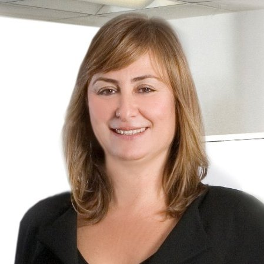

<div class="container">
	<div class="row">
        <div id="speaker-detail" class="col-lg-8 col-lg-offset-3">
            <div class="row">
            	<button title="Close (Esc)" type="button" class="mfp-close">×</button>
                <div class="col-md-4 col-lg-4">
                    <br />
                </div>
                <div class="col-md-8 col-lg-8">
                    <h2>Zeynep Sarılar - Chairwoman at ITEA Office</h2>
                    <h3></h3>
                    <p>Zeynep Sarılar, born in Izmir, Turkey, received her degree in 1989 from the Electric and Electronics Engineering Department of Dokuz Eylul University.<br><br>She has broad software engineering experience in several major companies on three continents, as engineer, business consultant and manager focusing on embedded systems, wearables and mobile applications.<br><br>In 2001, she co-founded Mobilera, a leading CRM based mobile marketing and advertising company. She managed Service and Product Development till 2013 when she initiated GEMİM, a Centre for Entrepreneurship Training and Incubation.<br><br>She can draw from her extensive experience in ITEA due to her participation in several ITEA projects and ITEA Boards. On her future as chair of the ITEA Board, Zeynep Sarılar stated:<br><br>"ITEA is the place for Software Innovation and Software Innovation addresses the global market. My ambition is to make ITEA more global and to support our countries and companies in mastering the Digital Challenges."
                    </p>
                </div>
            </div>
        </div>
    </div>
</div>